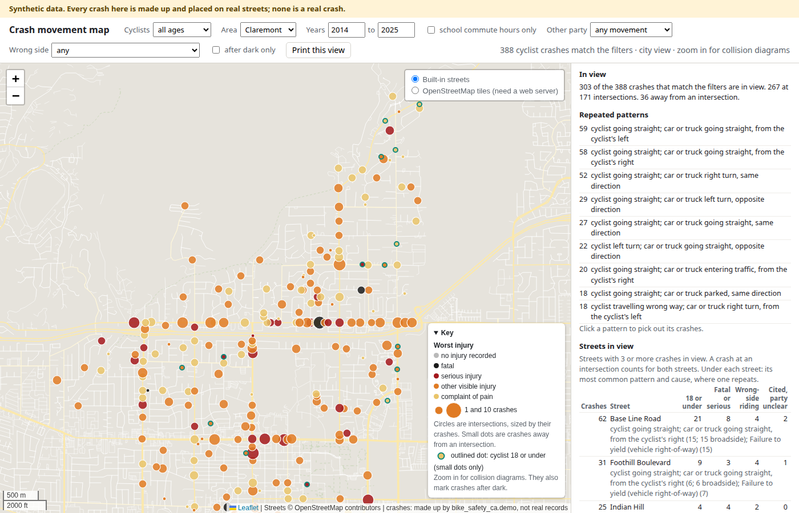

bike-safety-ca
How often people on bikes end up in hospital in a California county, where the crashes were, and where to look next.
The code turns public records (state hospital counts, police crash reports and OpenStreetMap) into a county hospital report, an interactive crash map and a ranking of intersections by expected bike crashes. The samples here are made from made-up data.
Try it

- The crash movement map on a demo city: real Claremont streets and made-up crashes. One file; it works offline.
- A sample county hospital report (PDF): the real report code on made-up counts for an invented county.
Read more
- The repository, with how to install and run it
- The guide: every step, from downloading records to the report
- Where the ranking helps most and least
- Case study: Los Altos